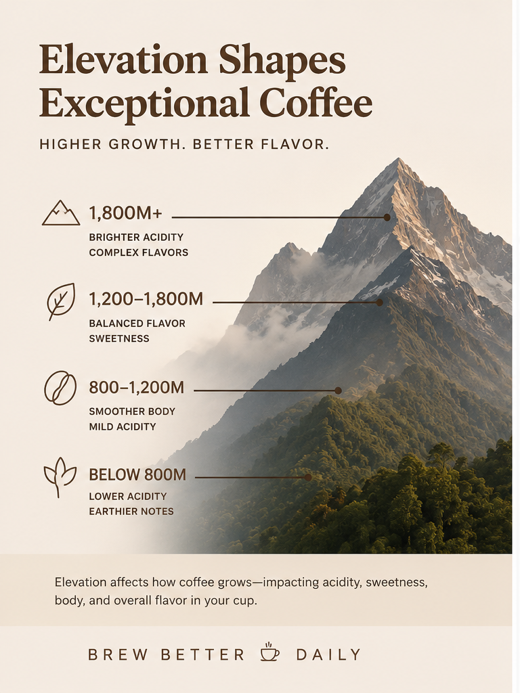

How Elevation Affects Coffee Flavor, Acidity, and Caffeine
Why high-altitude coffee beans often taste brighter, sweeter, and more complex than lower-grown coffees.
If you have ever wondered why some coffees taste bright and fruity while others feel heavier and earthier, elevation is one of the biggest reasons why.
Coffee grown at higher elevations develops differently than coffee grown closer to sea level. Temperature, oxygen levels, sunlight exposure, and slower cherry maturation all influence the final flavor in the cup. In specialty coffee, elevation is often directly connected to acidity, sweetness, bean density, and flavor complexity.
Table of Contents
Why Elevation Matters for Coffee
Coffee plants grown at higher elevations mature more slowly because temperatures are cooler. That slower growth allows the coffee cherry to develop sugars and organic compounds more gradually, which often creates more layered and complex flavors.
Higher elevation coffees are commonly associated with:
- Brighter acidity
- Floral and fruity tasting notes
- Increased sweetness
- Cleaner finishes
- Greater flavor complexity
Lower elevation coffees tend to develop faster due to warmer climates, often producing:
- Lower acidity
- Heavier body
- Earthier or nuttier flavors
- Simpler flavor profiles
This is one reason why many highly regarded specialty coffees come from mountainous growing regions in Ethiopia, Colombia, Kenya, Costa Rica, and Guatemala.
Our Ethiopia Natural grows at 1,700–1,900 meters and showcases the bright fruit-forward acidity and floral complexity high-elevation coffees are known for.
Similarly, our Kenya Single Origin grows between 1,700–1,890 meters and develops vibrant berry notes with wine-like acidity.
How High Elevation Changes Flavor
Acidity
One of the most noticeable differences in high-altitude coffee is acidity.
In coffee tasting, acidity does not mean sourness. Instead, it refers to brightness and liveliness in flavor. High elevation coffees often feature citrus, berry, apple, floral, or wine-like characteristics.
Sweetness
Slower cherry maturation also allows sugars to develop more gradually. This often creates sweeter cups with tasting notes like honey, caramel, stone fruit, chocolate, and berry jam.
Complexity
Higher elevation coffees typically contain more nuanced flavor separation. Instead of tasting “just like coffee,” they may reveal multiple flavor layers as the cup cools.
Extremely high-grown coffees can become especially expressive.
Our Uganda Single Origin grows between 1,500–2,500 meters and develops layered sweetness, brighter acidity, and a cleaner overall cup profile due to its slower maturation at elevation.
Does Elevation Affect Caffeine Levels?
Elevation can influence caffeine levels indirectly, but the relationship is not simple.
The largest factor affecting caffeine content is usually the coffee species itself:
- Robusta naturally contains significantly more caffeine than Arabica
- Arabica is more commonly grown at higher elevations
Because high-elevation specialty coffee is often Arabica, many people assume altitude directly lowers caffeine content. In reality, the species matters more than elevation alone.
In practical brewing terms, roast level, brew method, bean variety, and coffee species usually affect caffeine levels more noticeably than elevation itself.
Why High Altitude Beans Are Denser
High-elevation coffee beans are usually denser because they develop more slowly.
Dense beans:
- Transfer heat differently during roasting
- Often require more careful roast development
- Can produce cleaner and more vibrant cups
This density is one reason high-elevation specialty coffees can taste more refined when roasted correctly.
Best Coffee Regions by Elevation
Ethiopia
Many Ethiopian coffees are grown between 1,700–2,200 meters and are known for floral, tea-like, and fruit-forward flavors.
Colombia
Colombian coffees commonly grow between 1,200–2,000 meters and often balance sweetness with bright acidity.
Our Colombia Single Origin grows between 1,300–1,500 meters and delivers a balanced cup with sweetness, brightness, and approachable complexity.
Kenya
Kenyan high-grown coffees are famous for vibrant berry notes and wine-like acidity.
Costa Rica
High-altitude Costa Rican coffees often showcase clean sweetness and citrus character.
Our Costa Rica Single Origin grows between 1,300–1,445 meters and demonstrates how elevation can create balanced sweetness with bright, clean flavor clarity.
Lower Elevation Coffees
Lower-grown coffees can still produce excellent cups, especially for drinkers who prefer smoother body and lower acidity.
Coffees grown at lower elevations often lean toward chocolate, nutty, caramel, and earthy flavor profiles.
Our Brazil Santos grows between 750–1,050 meters and produces a smoother, more mellow cup with lower acidity compared to many high-grown African coffees.
Likewise, our Mexico Single Origin grows around 900–1,000 meters and demonstrates how mid-to-lower elevation coffees can still offer sweetness and balance while remaining approachable for everyday brewing.
High vs Low Elevation Coffee Comparison
| Elevation | Common Characteristics |
|---|---|
| Below 800m | Earthier flavors, lower acidity, heavier body |
| 800–1,200m | Balanced sweetness and body |
| 1,200–1,800m | Brighter acidity, greater complexity |
| 1,800m+ | Intense fruit notes, floral aromas, vibrant acidity |
Is Higher Elevation Always Better?
Not necessarily.
While high elevation often improves complexity and brightness, lower elevation coffees can still produce excellent cups depending on processing methods, roast quality, bean variety, soil conditions, and farming practices.
Some people actually prefer lower-acid, fuller-bodied coffees grown at lower elevations.
The “best” coffee ultimately depends on personal taste preferences.
Final Thoughts
Elevation plays a major role in how coffee develops, tastes, and roasts.
Higher elevation coffees generally mature more slowly, creating denser beans with brighter acidity, more sweetness, and greater flavor complexity.
That does not automatically make them better for every drinker, but understanding elevation can help explain why coffees from different regions taste so different from one another.
Try Different Elevations Yourself
The easiest way to understand elevation is to taste the differences side by side.
Compare lower-grown coffees like Brazil Santos with higher-grown coffees from Ethiopia, Kenya, or Uganda to experience how elevation changes acidity, sweetness, body, and complexity.
Explore Single Origin CoffeesFAQ
Does higher elevation always mean better coffee?
No. It often means brighter acidity and more complexity, but great coffee also depends on processing, roasting, and personal taste preferences.
Does elevation directly determine caffeine level?
Not by itself. Coffee species and brewing method usually have a bigger impact on caffeine content.
Why do high-elevation beans often roast differently?
High-elevation beans are usually denser, so they often require adjusted roast curves for balanced development.